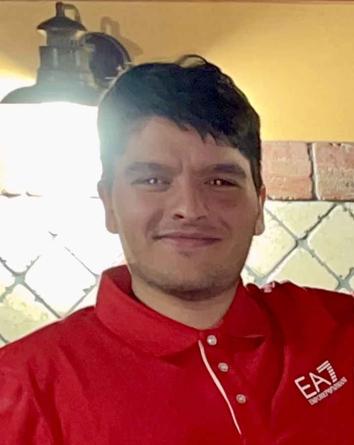
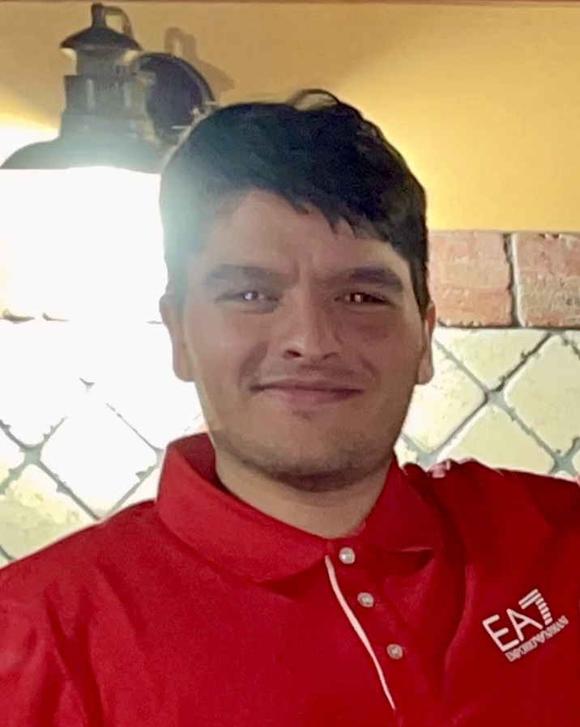

Introduction
Progetto redatto da Garofalo Mirko e Palazzolo Alessandro sulla simulazione di un Robot smista rifiuti.
Requirements
Automatic Garbage Storage
Una compagnia intende costruire un WasteService per separare limmondizia raccolta, composto da un set di elementi:1. un area di servizio (rettangolare, piatta) che include:
- una porta INDOOR, dove entra l'immondizia
- un conteiner PlasticBox, che ha l'obiettivo di raccogliere gli oggetti plastica, fino a un MAXPB kg
- un conteiner GlassBox, che ha l'obiettivo di raccogliere gli oggetti vetro, fino a un MAXGB kg
L'area di servizio è libera da ostracoli interni, e si mostra come l'immagine che segue:

2. Un robot DDR che funge da carrello di trasporto, che inizialmente è situato nella sua posizione di HOME. Questo carrello di trasporto ha la forma di un quadrato di lunghezza laterale RD
3. Un Service-manager(un essere umano) che supervisiona lo stato dell'area di servizio utilizzando una WasteServiceStatusGUI
4. Un Sonar e un Led collegati ad un RaspberryPy. Il led verrà usato come dispositivo di segnalazione, il sonar invece come dispositivo di allarme.
Requirement
L'obiettivo del WASTESERVICE software è quello di permettere a un camion dei rifiuti di depositare il prorio TruckLoad(kg) o di plastica o vetro nel container giusto(PasticBOX,GlassBOX). La simulazione può essere descritta come segue:
- Il camion dei rifiuti approccia INDOOR area e manda (mediante uno "Smart Device") una richiesta di di depositare il carico, specificando il tipo del materiale (plastica o vetro) e il suo TruckLoad .
- Il WASTESERVICE manda una risposta di loadaccept se il contenuto del finale del container giusto non sorpassa il valore massimo consentito (MAXPB or MAXGB). Altrimenti manda una risposta di loadrejecetd e il camion dei rifiuti lascia l'INDOOR area.
- Quando il carico è accettato, il transport trolley ragiunge l'INDOOR , prende il materiale, va al giusto container e deposita il materiale. Durante il WASTESERVICE il Led lampeggia.
- Quando l'azione di deposito è terminata, il transport trolley esegue un altro comando di deposito (se ce ne sono) o ritorna a casa.
Il WasteService deve creare una WasteServiceStatusGUI che permette al Service-manager di vedere:
- Lo stato corrente del transport trolley e il suo posizionamento nella stanza.
- Il peso corrente dei materiali presenti nei due container dei rifiuti.
- Lo stato corrente del Led.
Requirement analysis
Dizionario
- TruckLoad : Quantitativo di spazzatura trasportata dal camion di rifiuti.
- TruckType : Tipologia della spazzatura(plastica o vetro).
- MAXPB: Massimo peso della spazzatura che il container di plastica può depositare.
- MAXGB: Massimo peso della spazzatura che il container di vetro può depositare.
- LoadAccept: risposta positiva alla richiesta di deposito del carico del camion dei rifiuti.
- LoadRejected: risposta negativa alla richiesta di deposito del carico del camion dei rifiuti.
TruckDriver e WasteService
Il truckDriver manderà un messaggio per richiedere se può depositare o meno il carico. Possimao formalizzare il messaggio nel seguente modo:
Il TruckDriver comunicherà,al WestService, il suo truckLoad e il truckType, e rimarrà in attesa di una risposta.
Dall'altra parte il westService, dopo aver effettuato i controlli,
Visti questi scambi di messaggi, assumereò che queste due entità sono
Adesso, come per i messaggi, formalizziamo il TruckDriver e il WasteService:
TransporTrolley
Il transportTrolley è un'entità che viene comandata al fine di comandare il DDR Robot.
Il committente ha precisato che il transportTrolley
A questo punto, formalizziamo il nostro TransportTrolley
Sonar e Led
Il led è un'entità, collegata ad un RaspberryPi, che deve compiere determinate azioni determinate dai movimenti del nostro DDR Robot
Il Committente ci fornisce i software per il led:
Adesso formalizziamo il nostro LED
Per quanto riguarda il Sonar, anch'esso sarà attaccato ad un RaspberryPi e il committente ci fornisce il seguente software: SonarAlone.c
In fine formalizziamo il nostroSonar
TesPlan
Test WastService
I test effettuatoi consistono nell'invio della richiesta di deposito al WasteService.
Nel primo test, il wasteService dovrà rispondere con un loadAccept dato che il peso è inferiore a quello rimanente.Inoltre per la riuscita del test si dovrà confrontare che lo stato precedente dei pesi più quelli depositati ora sia uguale a quelli correnti.
Nel secondo test, il wasteService dovrà rispondere con un loadRejecetd dato che il peso è superiore a quello rimanente.Inoltre per la riuscita del test si dovrà confrontare che lo stato precedente dei pesi è uguale a quello corrente
Si mostrano i TestWasteService e il modello del WasteService utilizzato.
Test TransportTrolley
Il test effettuato consiste nell'invio delle richieste al TransportTrolley
Nel test vedremo una serie di messaggi che faranno transitare il transportTrolley negli stati descritti e il test avrà sucesso se la risposta del trolley è quella aspettata. Inoltre il test riuscirà se lo stato verrà aggiornato correttamente
Si mostra il TestTransportTrolley e il modello del TransportTrolley
 
